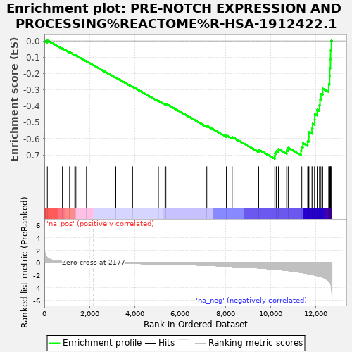

| | | Dataset | rankInfo |
| Phenotype | NoPhenotypeAvailable |
| Upregulated in class | na_neg |
| GeneSet | PRE-NOTCH EXPRESSION AND PROCESSING%REACTOME%R-HSA-1912422.1 |
| Enrichment Score (ES) | -0.7238439 |
| Normalized Enrichment Score (NES) | -1.6501641 |
| Nominal p-value | 0.0 |
| FDR q-value | 0.0041207285 |
| FWER p-Value | 0.214 |
Table: GSEA Results Summary

Fig 1: Enrichment plot: PRE-NOTCH EXPRESSION AND PROCESSING%REACTOME%R-HSA-1912422.1
Profile of the Running ES Score & Positions of GeneSet Members on the Rank Ordered List
| SYMBOL | RANK IN GENE LIST | RANK METRIC SCORE | RUNNING ES | CORE ENRICHMENT | | 1 | LFNG | 132 | 0.792 | 0.0028 | No |
| 2 | MFNG | 798 | 0.184 | -0.0465 | No |
| 3 | TMED2 | 1115 | 0.119 | -0.0695 | No |
| 4 | SIRT6 | 1346 | 0.081 | -0.0863 | No |
| 5 | RFNG | 1394 | 0.075 | -0.0887 | No |
| 6 | JUN | 1862 | 0.024 | -0.1252 | No |
| 7 | NOTCH1 | 3036 | -0.062 | -0.2167 | No |
| 8 | KAT2A | 3159 | -0.071 | -0.2251 | No |
| 9 | MOV10 | 3902 | -0.126 | -0.2815 | No |
| 10 | FURIN | 5043 | -0.218 | -0.3678 | No |
| 11 | ATP2A3 | 5335 | -0.242 | -0.3867 | No |
| 12 | SNW1 | 5375 | -0.246 | -0.3857 | No |
| 13 | POFUT1 | 7182 | -0.438 | -0.5208 | No |
| 14 | PRKCI | 8049 | -0.563 | -0.5797 | No |
| 15 | POGLUT1 | 8305 | -0.607 | -0.5897 | No |
| 16 | MAMLD1 | 9477 | -0.854 | -0.6678 | No |
| 17 | ST3GAL6 | 10189 | -1.051 | -0.7063 | Yes |
| 18 | TFDP2 | 10199 | -1.053 | -0.6893 | Yes |
| 19 | ST3GAL4 | 10260 | -1.076 | -0.6761 | Yes |
| 20 | B4GALT1 | 10350 | -1.108 | -0.6645 | Yes |
| 21 | AGO4 | 10713 | -1.249 | -0.6722 | Yes |
| 22 | AGO2 | 10781 | -1.277 | -0.6561 | Yes |
| 23 | SEL1L | 11347 | -1.560 | -0.6746 | Yes |
| 24 | ST3GAL3 | 11371 | -1.569 | -0.6501 | Yes |
| 25 | NOTCH2 | 11434 | -1.613 | -0.6280 | Yes |
| 26 | TNRC6C | 11644 | -1.750 | -0.6152 | Yes |
| 27 | ATP2A2 | 11694 | -1.792 | -0.5891 | Yes |
| 28 | MAML1 | 11696 | -1.796 | -0.5591 | Yes |
| 29 | AGO1 | 11834 | -1.891 | -0.5382 | Yes |
| 30 | TFDP1 | 11862 | -1.913 | -0.5083 | Yes |
| 31 | E2F3 | 11951 | -1.977 | -0.4822 | Yes |
| 32 | AGO3 | 11957 | -1.982 | -0.4494 | Yes |
| 33 | RBPJ | 12064 | -2.079 | -0.4230 | Yes |
| 34 | MAML2 | 12165 | -2.175 | -0.3945 | Yes |
| 35 | MAML3 | 12188 | -2.198 | -0.3594 | Yes |
| 36 | CREBBP | 12228 | -2.234 | -0.3251 | Yes |
| 37 | TNRC6A | 12307 | -2.340 | -0.2921 | Yes |
| 38 | TNRC6B | 12573 | -2.883 | -0.2647 | Yes |
| 39 | RAB6A | 12615 | -3.048 | -0.2169 | Yes |
| 40 | RUNX1 | 12621 | -3.066 | -0.1660 | Yes |
| 41 | KAT2B | 12652 | -3.268 | -0.1136 | Yes |
| 42 | EP300 | 12657 | -3.299 | -0.0587 | Yes |
| 43 | TP53 | 12690 | -3.791 | 0.0022 | Yes |
Table: GSEA details [plain text format]
 Fig 2: PRE-NOTCH EXPRESSION AND PROCESSING%REACTOME%R-HSA-1912422.1: Random ES distribution
Fig 2: PRE-NOTCH EXPRESSION AND PROCESSING%REACTOME%R-HSA-1912422.1: Random ES distribution
Gene set null distribution of ES for PRE-NOTCH EXPRESSION AND PROCESSING%REACTOME%R-HSA-1912422.1